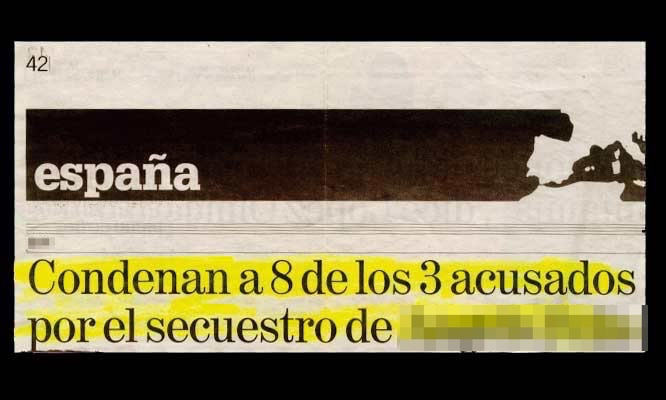
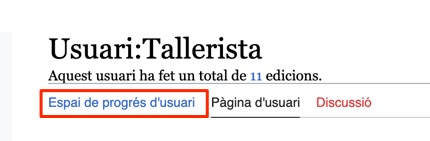
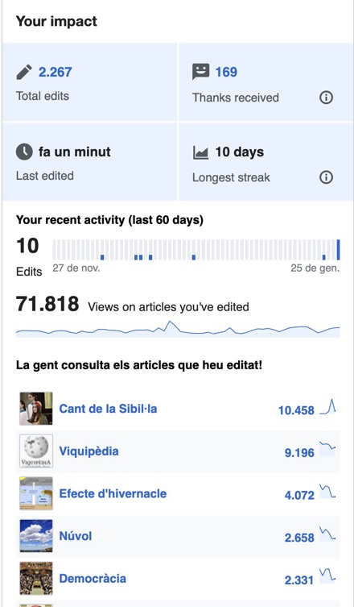
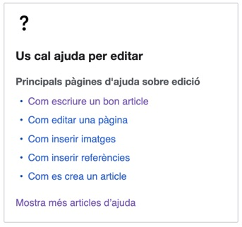
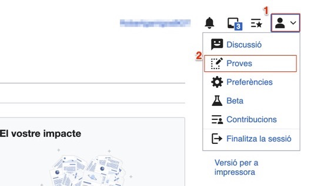
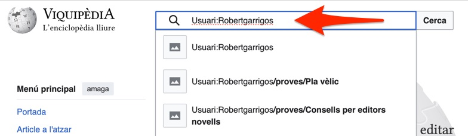
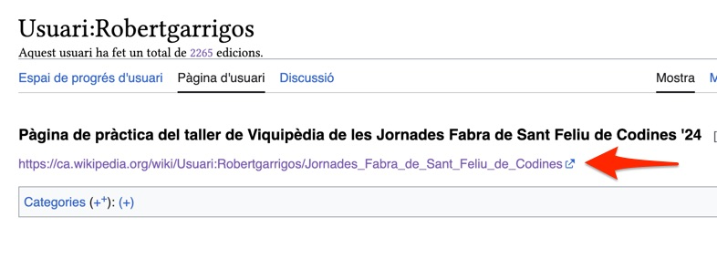
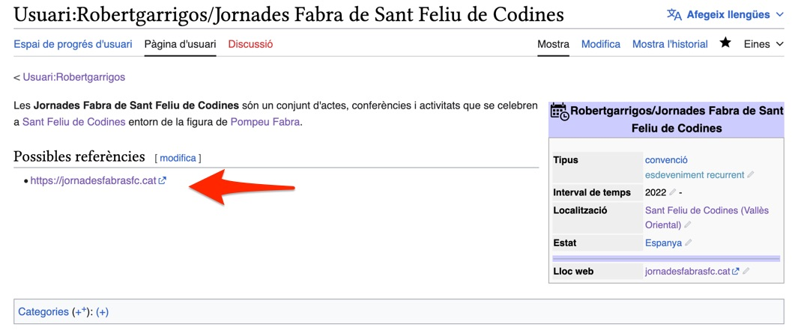

Què és la Viquipèdia?
Trobareu aquesta presentació a garrigos.cat
Què sabeu de la Viquipèdia?
La Viquipèdia és:
una enciclopèdia…
…una mica especial.
La Viquipèdia és lliure!
Qualsevol persona la pot consultar.
Qualsevol persona la pot editar.
Qualsevol persona la pot replicar…
…si la cita com a font (reconeixement)…
…i si es comparteix amb la mateixa llicència.
Viquipèdia:Text de la llicència de Creative Commons Reconeixement-Compartir Igual 3.0 No adaptada
La Viquipèdia és col·laborativa
Els articles no tenen propietaris.
Les normes editorials i els continguts es consensuen.
La Viquipèdia és en línia
Accessible a tot el món…
…en tot moment.
La Viquipèdia és independent
La Viquipèdia té 326 idiomes diferents.
https://meta.wikimedia.org/wiki/List_of_Wikipedias
Cada idioma és independent.
La Viquipèdia en català no és una còpia de l'anglesa.
La Viquipèdia és gratuïta
Està editada i administrada per voluntaris…
…organitzats en entitats sense ànim de lucre.
La Viquipèdia costa diners
Manteniment infraestructura informàtica.
Manteniment personal de gestió.
Per què és tan important la Viquipèdia?
Principal font de coneixement
Món: 7ª pàgina més visitada
https://www.similarweb.com/top-websites/
Catalunya: 53 milions de visites mensuals
https://stats.wikimedia.org/#/ca.wikipedia.org
Català: 129è idioma per nombre de parlants…
https://www.ethnologue.com/insights/ethnologue200/
…Viquipèdia en català és la 20ª de les 326
https://wikistats.wmcloud.org/display.php?t=wp
Viquipèdia en català
2ª Viquipèdia del món a tenir articles
https://w.wiki/6Sia
1ª Viquipèdia del món en els 1.000 articles bàsics
https://w.wiki/tzf
8ª Viquipèdia del món en els 10.000 articles bàsics
https://w.wiki/6VsS
La Viquipèdia és imperfecte
La Viquipèdia té errors
Equivocar-se és humà
La Viquipèdia té errors
Són molt fàcils de corregir
La Viquipèdia NO és
NO és un contenidor d'obres d'autor
NO és un espai d'opinió
NO és un espai de promoció
La Viquipèdia NO és una font fiable per ella
mateixa
Viquipèdia:Allò que la Viquipèdia no és
Regles del joc
Creació de coneixement vs. difusió del
coneixement
Viquipèdia:No feu treballs inèdits
Autentificar veracitat vs. verificar
autenticitat
Viquipèdia:Verificabilitat
Objectivitat vs. neutralitat
Viquipèdia:Punt de vista neutral
|
Viquipèdia:Conflicte d'interessos
Continguts privatius vs. continguts lliures
Viquipèdia:Infraccions de drets d'autor
Referències
Fonts primàries
Font primària
Fonts secundàries
Font secundària
Fonts fiables
Viquipèdia:Fonts fiables
Com podem començar?
1er. modifiquem
2en. creem
Què cal per fer una modificació?
Algú amb ganes de millorar un article
Un contingut referenciat
Saber treballar amb un editor de text
Què podem modificar?
Sobre el que llegim
Canviar per millorar
Corregir errors, ampliar o enriquir
Creació d'un usuari
Ajuda:VideotutorialsEspai de progrés d'usuari
Suggeriment d'edicions per nivell de dificultat
Especial:Pàgina d'inici
Impacte
Ajuda
Espai de proves

Consulteu els vídeos sobre els editors visual i de codi
Ajuda:Videotutorials
Condicions d'ús
NO són aplicables la majoria de normes.
NO cal seguir el llibre d'estil ni cercar el consens.
SÍ cal mantenir el sentit comú.
NO es permet contingut maliciós o difamatori.
Pràctica
Buscar a la Viquipèdia
Usuari:Robertgarrigos
La meva pàgina d'usuari
Feu clic a l'enllaç
Pàgina de proves de les Jornades Fabra
Farem un recull de referències
Traducció d'articles
Suggeriments de traduccions
Especial:ContentTranslation#suggestions
Viquiprojectes i viquimaratons
Agenda d'activitats
Viquipèdia:Trobades
Viquitrobades
Cap de setmana de conferències i tallers (anual)
Buscar a viquipèdia: "Viquiprojecte:Viquitrobada 2023"
Buscar ajuda
Ajuda
Viquipèdia:Ajuda
Taverna
Viquipèdia:La taverna
Buscar ajuda
Portal viquipedista
Viquipèdia:Portal
Mentorització
Viquipèdia:Sistema de mentorització
Moltes gràcies!
Preguntes?